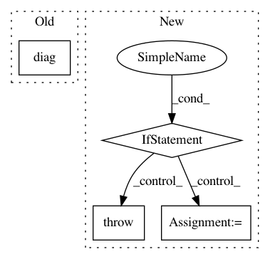

789d65f38f0949a3f03f61908a207cb558746769,stellargraph/layer/preprocessing_layer.py,GraphPreProcessingLayer,call,#GraphPreProcessingLayer#Any#,48
Before Change
adj = adj + tf.linalg.diag(tf.ones(adj.shape[0]) - tf.diag_part(adj))
// Normalization
rowsum = tf.reduce_sum(adj, 1)
d_mat_inv_sqrt = tf.diag(tf.rsqrt(rowsum))
adj_normalized = tf.matmul(tf.matmul(d_mat_inv_sqrt, adj), d_mat_inv_sqrt)
return adj_normalized
After Change
Returns:
The tensor of the transformed adjacency matrix.
if K.is_sparse(adj): // isinstance(adj, tf.SparseTensor):
raise RuntimeError(
"Tensorflow adjacency matrix normalization not implemented for sparse matrices."
)
else:
// Add self loops.
adj = adj + tf.linalg.diag(tf.ones(adj.shape[0]) - tf.linalg.diag_part(adj))
// Normalization
rowsum = tf.reduce_sum(adj, 1)
d_mat_inv_sqrt = tf.linalg.diag(tf.math.rsqrt(rowsum))
adj_normalized = tf.matmul(tf.matmul(d_mat_inv_sqrt, adj), d_mat_inv_sqrt)
return adj_normalized
In pattern: SUPERPATTERN
Frequency: 3
Non-data size: 4
Instances
Project Name: stellargraph/stellargraph
Commit Name: 789d65f38f0949a3f03f61908a207cb558746769
Time: 2019-12-19
Author: andrew.docherty@data61.csiro.au
File Name: stellargraph/layer/preprocessing_layer.py
Class Name: GraphPreProcessingLayer
Method Name: call
Project Name: nipy/dipy
Commit Name: 30eadc321c1755eca615a39bb4b8b5fc1e769f70
Time: 2019-03-10
Author: rafaelnh21@gmail.com
File Name: dipy/reconst/mdki.py
Class Name:
Method Name: _wls_fit_mdki
Project Name: lebedov/scikit-cuda
Commit Name: 24efdf4f57841d5d73fda3745b96a1b102ca484f
Time: 2015-11-25
Author: lev@columbia.edu
File Name: skcuda/linalg.py
Class Name:
Method Name: diag